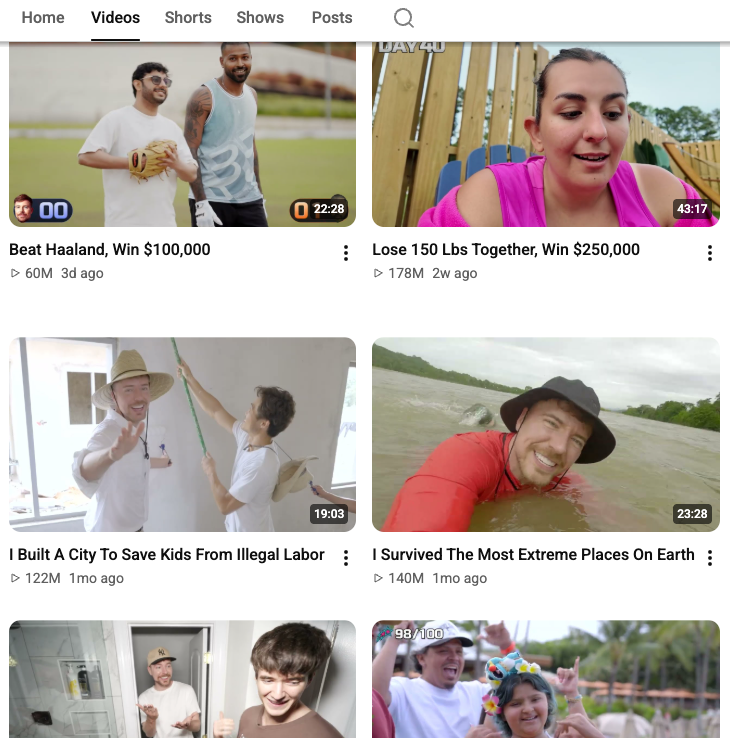

Middle Frame
Middle FrameYouTube thumbnails,
minus the shocked face.
Middle Frame swaps every thumbnail on YouTube for YouTube's own frame from the middle of the video. It's the trick Andrej Karpathy used for HackerTube, on the real YouTube.

Install (2 minutes)
- Download the zip and unzip it.
- Open
chrome://extensionsand turn on Developer mode (top right). - Click Load unpacked and pick the unzipped folder.
- Open YouTube. Click the extension's icon to switch things on and off.
Chrome Web Store listing on the way. Works in Chrome, Edge, Brave and Arc.
Two switches
Middle frames (on): every thumbnail becomes YouTube's auto-generated frame from mid-video, so you see the video, not the ad for it.
Calm titles (off): LOUD WORDS get quiet, and the 😱 and !!! go away.
Privacy
Collects nothing. No analytics, no accounts, no servers. It only runs on youtube.com and saves your two switches in Chrome. Privacy policy.